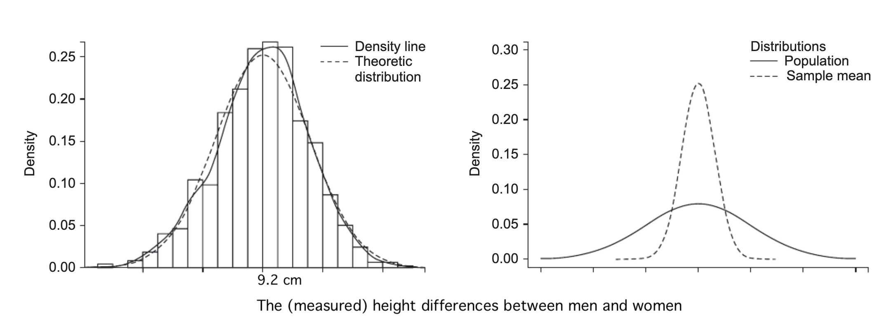
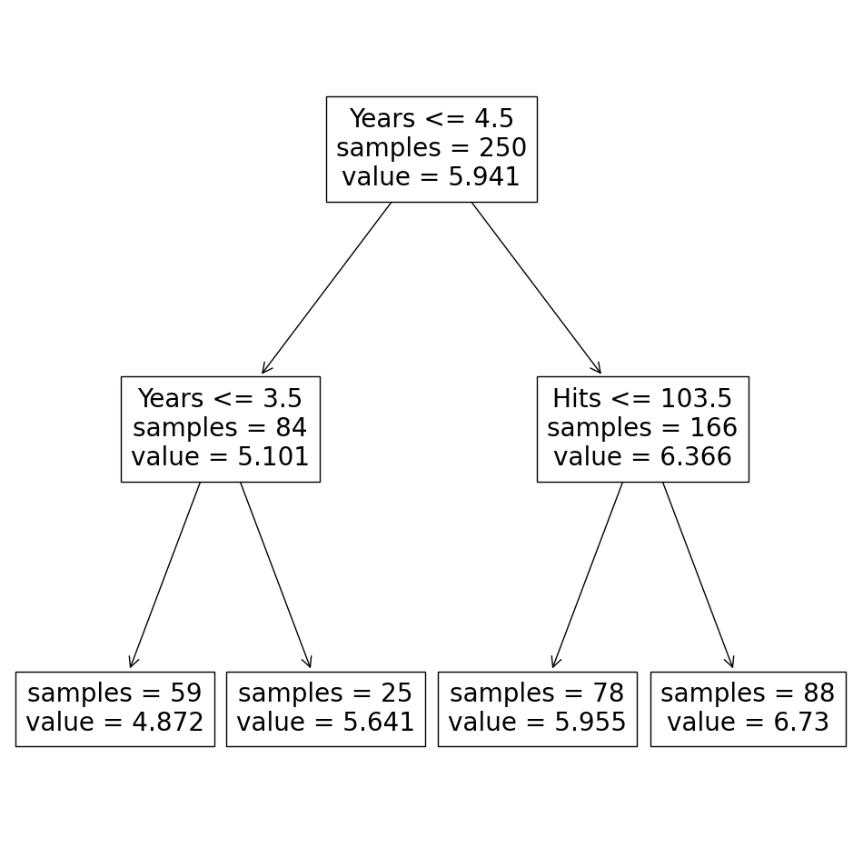
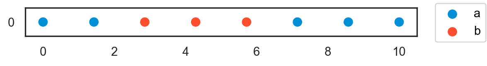

Two Cultures
Data Analysis
- 오랜동안 여러 분야에서 각자의 방식을 개발
Computer Science
Statistics
Biostatistics
Economics
Epidemiology
Political Science
Engineering
- 서로 다른 용어를 쓰기도 하며, 그 분야에서 필요로하는 방식에 초점을 맞춤.
- 서로 의사소통이 거의 없었음.
- Data Science라는 이름하에 통합되어가는 과정 중
- 컴퓨터 사이언스의 경우, 데이터에 존재하는 패턴을 학습하여 분류를 하거나 예측을 위한 이론과 툴들이 개발되는 반면,
- 과학자들은 예측보다는, 변수들 간의 진정한 관계 혹은 인과 관계를 탐구
- 현재 이 둘은 소위 cross-fertilization을 지향하며 같이 발전, 통합되어가고 있음.
The Two Cultures
Breiman, L. (2001). Statistical modeling: The two cultures (with comments and a rejoinder by the author). Statistical science, 16(3), 199-231. Extracted text
- 산업 현장에서의 경험을 토대로 전통적 통계의 한계를 지적
- 자신이 개발한 대안적 통계 기법(trees, random forests)을 소개하며, 기존 통계 기법과 비교
- Machine Learning 분야의 성취에 대한 열린 태도와 통계학의 방향성에 대해 제안

데이터 분석의 목적
- Prediction 예측: 미래의 입력 변수(input, X)에 대해 어떤 반응(reponse, Y)이 나올지 예측할 수 있는 기능
- Information 정보: 자연이 응답 변수(reponse, Y)와 입력 변수(input, X)를 어떻게 연관시키는지에 대한 정보를 추출
전통적 통계의 접근 방식: data modeling
머신러닝의 접근 방식: algorithmic modeling
The Data Modeling Culture
\(Y\) = \(f(X, \text{random noise, parameters})\)
- 모델의 타당도(validation): goodness-of-fit 테스트와 잔차의 검토
- 통계학자의 98%
Parameter Estimation & Uncertainty
가령, “생물학적 성별에 따른 키(혹은 임금)의 차이는 본질적으로 얼마인가?”라는 질문은 어떤 의미를 가지는가?
이 질문에 답하기 위한 과학적 접근은 무엇인가?
- 남성, 여성은 무엇을 뜻하는가? 이를 정의해야 함. → 모집단의 프레임워크로 접근
- 본질적 차이라는 것이 무엇을 의미하며 어떻게 알아낼 수 있는가?
- 남녀의 키를 결정하는 무수한 요인들로부터 현실에서 남녀의 키는 다양한 값으로 분포됨.
- 그럼에도 불구하고, 생물학적 성만의 “고유한 효과”가 존재할 것이라는 가정하에 (본질적 차이); \(y = \beta_0 + \beta_1\cdot sex + \epsilon\)
- 생물학적 성만이 “고유하게” 발생시키는 키의 차이를 밝히고자 함.
Central Limit Theorem과 같은 이론을 근거로 생물학적 성 이외의 수많은 요인들의 효과는 노이즈(noise)로 이해하고 “정규분포”처럼 나타날 것이라는 가정하에,
안전하게, 생물학적 성만의 고유한 효과를 추출할 수 있음; “노이즈(noise)로부터 시그널(signal)을 분리”
위 모델에서 \(\epsilon\)에 대한 모델링: \(\epsilon \sim N(0, \sigma^2)\)로 가정
- 이 차이를 알아내기 위해 실제로 어떻게 측정할 것인가?
- 가정된 전체(모집단)를 관찰할 수 없기 때문에 특정 표본을 관찰하여 전체에 대한 추정치를 얻고자 함.
- 표본에 따라 다른 값이 얻어질 것이기 때문에, 그 값들의 (이론적) 분포를 “표본 분포”라고 하고, 이 분포를 통해 현재 표본으로부터 모집단 추정치에 대한 불확실성을 추정 
- 현재 관찰된 데이터는 어떤 모집단(population)으로부터 (독립적으로) 발생된 표본(sample)이라고 가정
- 변수들 간의 관계성(relationships)을 파악하기 위해, 데이터 모델링은 현상에 대한 모델을 사전 설정(assumptions)하고,
- 예를 들어, 모집단에 대해서 선형관계를 가정: \(y = \beta_0 + \beta_1 x_1 + \beta_2 x_2 + \epsilon\)
- 변수들의 값이 어떻게 발생하는지(generated)에 대한 가정을 세우고,
- 예를 들어, Gaussian, Binormial distribution, …
- 데이터에 가장 적합한(best fitted) 특정 모델을 선택 (즉, 파라미터 \(\beta s\)를 추정)
- 즉, 위의 선형 함수가 \(X\), \(Y\)의 1) 관계를 나타내고, 2) 예측을 위해 사용됨
- \(\epsilon\)은 \(X\)와 \(Y\)의 본질적 관계와는 상관없는 일종의 노이즈(noise); 정확히는 \(X\)로는 설명되지 않는 \(Y\)의 부분
- 노이즈(noise)로부터 시그널(signal)을 분리: “true relationships”을 찾고자 함.
- 이 파라미터 \(\beta s\)의 불확실성(uncertainty)을 추정
- 모집단에 대한 추정, 즉 진정한 값을 추정하는 것이므로 불확실성이 존재
\[ \begin{align*} \text{y(Depression)} = f(x) =\ & \beta_0 + \beta_1 \cdot \text{Age} + \beta_2 \cdot \text{Sex} + \beta_3 \cdot \text{FamilyHistory} + \beta_4 \cdot \text{ChronicDisease} \\ & + \beta_5 \cdot \text{StressLevel} + \beta_6 \cdot \text{SleepQuality} + \beta_7 \cdot \text{PhysicalActivity} \\ & + \beta_8 \cdot \text{SocialSupport} + \beta_9 \cdot \text{DigitalBehavior} + \epsilon \end{align*} \]
예측요인들
| 인구학적 요인 | Age, Sex | 나이, 성별 |
| 건강·임상 요인 | FamilyHistory, ChronicDisease | 가족력, 만성질환, 과거 정신질환 이력 |
| 심리·행동 요인 | StressLevel, SleepQuality, PhysicalActivity | 스트레스 수준, 수면의 질, 운동·활동량 |
| 사회적 요인 | SocialSupport | 사회적 지지(가족·친구·공동체) |
| 디지털/행동 데이터 | DigitalBehavior | 스마트폰 사용 패턴, SNS 언어, 이동성 데이터 |
실제로는 변수들 간의 복잡한 관계를 규명하고자 함. 가령,
예를 들어,
Source: Jiang, W., Lavergne, E., Kurita, Y., Todate, K., Kasai, A., Fuji, T., & Yamashita, Y. (2019). Age determination and growth pattern of temperate seabass Lateolabrax japonicus in Tango Bay and Sendai Bay, Japan. Fisheries science, 85, 81-98.
단순한 선형 모델의 예
다이아몬드 가격에 대한 예측 모델

{kind=link}
{kind=link}
{kind=link}
{kind=link}
{kind=link}
{kind=link}
가정들:
\(X\)와 \(Y\)의 간의 true relationship: \(Y_i = \beta_0 + \beta_1 X_i + \epsilon_i\)
Noise/residual의 분포: \(\epsilon_i \sim N(0, \sigma^2)\)
- Mean function: \(E(Y | X = X_i) = \beta_0 + \beta_1 X_i\)
- Variance function: \(Var(Y | X = X_i) = \sigma^2\)
- Distribution: \((Y | X = X_i) \sim N(\beta_0 + \beta_1 X_i, \sigma^2)\)
파라미터의 추정 및 불확실성:
- \(\hat{\beta}_0 = 0.4, \hat{\beta}_1 = 5123, \hat{\sigma} = 300\)
- 95%의 확률로 \(\beta_0 \in (0.3, 0.5), \beta_1 \in (4823, 5423)\)
- \(\widehat{price}_i = 0.4 + 5123 \cdot carat\) : “평균적으로 다이아몬드가 1 carat 커질 때마다 $5123 비싸짐”
- 노이즈로부터 관계에 관한 시그널을 추출한 것으로 볼 수 있음
데이터 모델의 한계
- 과연 가정한 모델이 자연/현상을 잘 모방하고 있는가?
This enterprise has at its heart the belief that a statistician, by imagination and by looking at the data, can invent a reasonably good parametric class of models for a complex mechanism devised by nature.
핵심은 통계학자가 상상력을 발휘하고 데이터를 살펴보면 자연이 고안한 복잡한 메커니즘에 대해 합리적으로 좋은 파라메트릭 클래스의 모델을 발명할 수 있다는 믿음입니다. (번역 by DeepL)
The belief in the infallibility of data models was almost religious. It is a strange phenomenon—once a model is made, then it becomes truth and the conclusions from it are infallible.
데이터 모델의 무오류성에 대한 믿음은 거의 종교에 가까웠습니다. 일단 모델이 만들어지면 그것이 진리가 되고 그 모델에서 도출된 결론은 오류가 없다고 믿는 이상한 현상입니다. (번역 by DeepL)
- 모델이 데이터에 얼마나 잘 맞는지에 대한 논의가 거의 없음
- 특히, 주로 예-아니오로 답하는 적합도 테스트를 통해 모델의 적합성을 판단
- 샘플링 오류로 인해 우연히 관찰된 것은 아니라는 정도에 대한 확신; 완전한 거짓은 아니라는 판단
- 주로 독창적인 확률 모형을 찾는데 주력
- (가정한) 모델을 데이터에 맞출 때 결론은 자연의 메커니즘이 아니라 모델의 메커니즘에 관한 것이 됨
- 모델이 자연을 제대로 모방하지 못하면 결론이 잘못될 수 있음
데이터 모델의 다양성
- 데이터 모델링의 가장 큰 장점: 입력 변수와 응답 간의 관계를 간단하고 이해하기 쉬운 다이어그램으로 표현 가능; 회귀 분석의 예
- 하지만, 데이터에 동일하게 적합한 여러 모델이 존재
- 적합성(goodness-of-fit)에 대한 기준이 통계적 검정을 통한 예-아니오로 판별
- 관찰한 데이터로만 모델의 파라미터를 추정하기 때문에, 과적합이 발생하며, 새로운 데이터에 대한 예측 정확도가 떨어질 수 있음
- 편향되지 않은 예측 정확도 추정치를 얻으려면 교차 검증(cross-validation)을 사용하거나 일부 데이터를 테스트 집합(test set)으로 따로 떼어 놓을 필요가 있음
모형의 가정에 위배
- 일반적으로 의료 데이터, 재무 데이터와 같이 복합 시스템에서 생성된 데이터에 단순한 파라메트릭 모델을 적용하면 알고리즘 모델에 비해 정확성과 정보가 손실될 수 있음
- 현실에서 데이터의 발생 메커니즘(확률 분포 및 인과적 연결성)에 대한 가정이 성립되기 어려움
- 모델을 가정하기보다는 데이터와 실제로 처한 문제로부터 해결책을 찾아 갈 필요가 있음.
“If all a man has is a hammer, then every problem looks like a nail.”
불확실성에 대한 가정에 대한 다른 접근: 관측값이 늘어남에 따라 사전 확률(prior probability)을 업데이트(사후 확률, posterior probability)하여 사건 발생에 대한 믿음(확률)을 추정하는 방식
Source: McElreath, R. (2018). Statistical rethinking: A Bayesian course with examples in R and Stan. Chapman and Hall/CRC.
The Algorithmic Modeling Culture

자연의 복잡하고 신비하며 적어도 부분적으로는 알 수 없는 블랙박스에서부터 데이터가 생성된다고 가정
데이터로부터 반응 \(Y\)를 예측을 하기 위해 \(X\)에 작용하는 알고리즘 함수 \(f(X)\)를 찾고자 함
- 가정: 데이터가 어떤 분포로부터 독립적으로 발생(i.i.d. Independent & identically distributed)
- 모델의 타당도 지표: 예측 정확도 (predictive accuracy)
- 통계학자의 2%
예를 들어, 야구 선수의 연봉을 예측하기 위한 결정 트리 모델 (regression tree)

- 다양한 방식의 여러 결정 트리 모델을 생성 후
- 이들을 결합(aggregating)하여 평균을 내어 예측 정확도를 높일 수 있음
새로운 연구 커뮤니티
- 젊은 컴퓨터 과학자, 물리학자, 엔지니어와 나이든 몇 명의 통계학자 등이 주도
- 1980년대 초 리처드 올슨의 연구를 시작으로 의료 데이터 분석에 조금씩 진출하기 시작
- 1980년대 중반에 두 가지 강력한 새 알고리즘, 즉 신경망(neural network)과 의사 결정 트리(tree)가 등장
- 1990년대 통계학에서도 smoothing spline 알고리즘, cross validation을 사용한 데이터에 대한 적용에 관한 연구가 존재
- 1990년대 중반에는 Vapnik의 서포트 벡터 머신(support vector machine)이 등장
- 예측 정확도를 목표로, 음성 인식, 이미지 인식, 비선형 시계열 예측, 필기 인식, 금융 시장 예측 등 데이터 모델을 적용할 수 없는 것이 분명한 복잡한 예측 문제를 해결
머신 러닝 분야로부터의 레슨
좋은 모델의 다양성 (multiplicity)
- 예측도가 비슷한 전혀 다른 모델이 존재할 수 있는데
- 이 모델들을 결합(aggregating)하면 예측 정확도를 높일 수 있으며, 단일한 모델로 환원할 수 있음
단순성 대 정확성 (simplicity vs. accuracy)
The Occam’s Dilemma
- 예측에 있어 정확성과 단순성(해석 가능성)은 상충됨
- 정확도를 높이려면 더 복잡한 예측 방법이 요구
- 단순하고 해석 가능한 함수는 예측력이 높지 못함
- 예측 정확도를 먼저 추구한 후 그 이유를 이해하는 것이 더 낫다고 제안
- 목표 지향적인 관점에서 보면 오컴의 딜레마는 존재하지 않음
차원의 저주 (the curse of dimensionality)
Digging It Out in Small Pieces
- 전통적으로 (데이터 크기에 상대적으로) 변수가 많을수록 좋지 않다고 여겼으나,
- Tree나 neural network에서는 변수가 많은 것이 문제가 되지 않고, 오히려 작은 정보들이 추가됨
- 예를 들어, 30개의 예측 변수로부터 4차항들을 추가하면 약 40,000개의 새로운 변수가 생성됨
- 이들의 정보는 분류에 도움이 되어 예측 정확도를 높일 수 있음

블랙박스로부터의 정보 추출
The goal is not interpretability, but accurate information.
“정확성(accuracy)과 해석 가능성(interpretability) 중 하나를 선택해야 한다면, 그들은(통계학자) 해석 가능성을 택할 것입니다.
정확성과 해석 가능성 사이의 선택으로 질문을 구성하는 것은 통계 분석의 목표가 무엇인지에 대한 잘못된 해석입니다. 모델의 핵심은 응답 변수(Y)과 예측 변수(X) 간의 관계에 대한 유용한 정보를 얻는 것입니다. 해석 가능성은 정보를 얻는 한 가지 방법입니다. 그러나 예측 변수와 응답 변수 간의 관계에 대한 신뢰할 수 있는 정보를 제공하기 위해 모델이 반드시 단순할 필요는 없으며, 데이터 모델일 필요도 없습니다.” (번역 by DeepL)
- 예측 정확도가 높을수록 기저에 있는 데이터 발생 메커니즘(data generating process)에 대한 더 신뢰할 수 있는 정보가 내재할 가능성이 높음; 예측 정확도가 낮으면 의심스러운 결론을 내릴 수 있음
- 알고리즘 모델은 데이터 모델보다 예측 정확도가 더 높으며, 기저 메커니즘(underlying mechanism)에 대한 더 나은 정보를 제공할 수 있음.
예를 들어,
- 의료 데이터와 같이 변수가 데이터에 비해 상대적으로 매우 많은 경우, 더 신뢰만한 변수들의 중요도를 추출할 수 있었음
- 클러스터링과 같은 유사한 패턴을 보이는 군집들을 발견할 수 있었음
- 유전자 분석처럼 데이터 모델을 생각하기 어려운 곳에 적용 가능; 머신러닝은 변수가 많을수록 좋으며, 과적합하지 않음
결론
통계의 목표는 데이터를 사용하여 예측하고 기저에 있는 데이터 메커니즘에 대한 정보를 얻는 것입니다. 데이터와 관련된 문제를 해결하기 위해 어떤 종류의 모델을 사용해야 하는지는 석판에 적혀 있지 않습니다. 제 입장을 분명히 말씀드리자면, 저는 데이터 모델 자체를 반대하는 것이 아닙니다. 어떤 상황에서는 데이터 모델이 문제를 해결하는 가장 적절한 방법일 수 있습니다. 하지만 문제와 데이터에 중점을 두어야 합니다. (번역 by DeepL)
The goals in statistics are to use data to predict and to get information about the underlying data mechanism. Nowhere is it written on a stone tablet what kind of model should be used to solve problems involving data. To make myposition clear, I am not against data models per se. In some situations they are the most appropriate wayto solve the problem. But the emphasis needs to be on the problem and on the data.
올바른 (인과) 모델의 필요성
천체의 움직임에 대한 모델
프톨레마이오스(Claudius Ptolemaeus, CE 100년 이집트 출생)의 천동설 모델
- 행성의 움직임에 대한 수학적 모델은 매우 정확했으며, 천 년 넘게 활용되었음
- 적절한 위치에 충분한 에피사이클(epicycle)을 배치하면 행성의 움직임을 (지구인의 시점에서) 매우 정확하게 예측할 수 있음
Source: McElreath, R. (2018). Statistical rethinking: A Bayesian course with examples in R and Stan. Chapman and Hall/CRC.
Maya Astronomy
- 천체의 운행에 대한 정교한 계산법 개발
- 예를 들어, 일식과 월식, 계절의 변화를 예측
과학적 발견의 프로세스
- 추측 > 모델링 > 관측/실험
- 계산된 결과(예측)와 실제 결과(관측)의 비교를 통해 모델의 타당성을 판단
- 결코 모델이 참인지 확신할 수 없음: 즉 true model은 존재하지 않을 수 있음; 예. 뉴튼 역학은 상대성 이론에 의해 수정
- 모델이 틀린지에 대해서는 확신할 수 있음
- 그럼에도 불구하고, 모델이 없는 과학은 위험할 수 있음
과학적 발견에서 AI의 역할
인식론적 불투명성이 AI 신뢰성의 한계로 작용하는가?
- AlphaFold2 성과: 2024년 노벨 화학상 수상, 단백질 구조 예측 성공
- AI 신뢰성 문제: “블랙박스”로 인해 내부 과정이 해석가능하지 않음
- 과학적 지식과 AI: AI는 가설 생성에 유용하나, 정당화에는 한계 (Duede, 2023)
- 신뢰성 구분 (Ortmann, 2025):
- why-reliability: 왜 신뢰 할 수 있는가?
- whether-reliability: 신뢰할 수 있는지에 대한 여부는 판단 가능; 경험적 성공과 광범위한 채택으로 신뢰 획득
- 철학적 회의론: 인식론적 투명성이 신뢰의 필수 요소 (Duede, 2022), 이론에 대한 인식적 보증이 요구 (Mitchell, 2020)
Source: 2025 Seoul Workshop on Philosophy of Machine Learning 중 “AI and the Logic of Scientific Discovery”
두 문화의 결합
원자의 움직임에 대한 슈뢰딩거 방정식
\(\displaystyle \left( -\frac{{\hbar^2}}{{2m}} \frac{{1}}{{r^2}} \frac{{\partial}}{{\partial r}} \left( r^2 \frac{{\partial}}{{\partial r}} \right) - \frac{{\hbar^2}}{{2m r^2}} \left( \frac{{\partial^2}}{{\partial \theta^2}} + \cot \theta \frac{{\partial}}{{\partial \theta}} + \frac{{1}}{{\sin^2 \theta}} \frac{{\partial^2}}{{\partial \phi^2}} \right) - \frac{{k e^2}}{{r}} \right) \psi(r,\theta,\phi) = E \psi(r,\theta,\phi)\)
- 이 방정식을 이용해 synthetic data를 생성: 현실에 대한 simulation
- 이 데이터를 이용해 머신러닝 모델을 학습: 물질의 속성에 대해 학습
- 그 모델을 이용해 많은 새로운 후보 물질들 중에 유용한 것을 매우 빠르게 걸러낼 수 있음
- 예측 모형의 다양한 활용 가능성을 보여줌